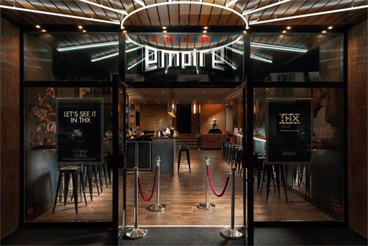

BIENVENUE AU CINERAMA EMPIRE
Idéalement situé sur un axe culturel bien desservi par les transports publics, bénéficiant d'un cadre privilégié, le CINERAMA EMPIRE proposera un choix varié de films toujours en version originale et présentés dans des conditions techniques optimales sur écran panoramique géant et dans un environnement sonore totalement immersif particulièrement étudié.
Le CINERAMA EMPIRE est le seul cinéma genevois en conformité avec tous les critères édictés par la Commission supérieure technique de l'image et du son, notamment pour la toile spéciale de son écran répondant aux normes pour des projections haute luminosité en 2D comme en 3D.
Grâce au soutien du Fonds Helios, le CINERAMA EMPIRE est accessible aux personnes souffrant d’un handicap et propose via le système Twavox un renfort sonore ou l’audio-description à la plupart des séances. Pour en savoir plus : www.twavox.fr/cinéma
Parkings à proximité (entrée des voitures par la rue Dancet située derrière le
cinéma)
Migros
Plainpalais Centre (ouvert 24/24, 365 jours par an ; accès après la fermeture des
commerces par la
rue Dizerens à côté du cinéma)
Coop Augustins ( ouvert
du lundi au samedi en journée
seulement)
UN CINÉMA ÉQUIPÉ DE LA DERNIÈRE TECHNOLOGIE
CONFORT
Grande salle sur deux niveaux
Espace exclusif sur la galerie avec 22 sofas numérotés
pour deux personnes
DISPLAY
Ecran géant incurvé au format panoramique nouvelle norme 2.39
Projecteur haute
résolution de dernière génération HFR 4K
ACCESSIBILITÉ
Renfort sonore ou l’audio-description à la plupart des séances
Monte-escaliers
électrique
SON
Processeur sonore numérique haute fidélité 16 canaux pour la 3D audio 13.1
Amplificateurs à très hautes performances norme THX
3D
3D immersive parfaite, système motorisé DepthQ CineBright en exclusivité à Genève
BAR
Vaste foyer et hall d'accueil équipés de deux bars exploités sous licence
PRIVATISATION DU CINÉMA ET DES DEUX BARS
Le CINERAMA EMPIRE est disponible pour des évènements privés même avec un délai court de moins de
10 jours ; les conditions standards peuvent être téléchargées ici et un devis personnalisé sera
établi sur simple demande envoyée par courriel à administration@cinerama-empire.ch
Conditions détaillées : charger pdf
PROJECTIONS SCOLAIRES
Les séances publiques des cinémas Ciné 17 et CINERAMA EMPIRE sont ouvertes aux classes, dans la
mesure des places disponibles. Les enseignants peuvent réserver des places pour leurs élèves par
courriel :
administration@cinerama-empire.ch
Un tarif spécial pour les groupes annoncés est applicable et les accompagnants sont invités (1
accompagnant par tranche de 10 élèves) ; par ailleurs, il est possible d’obtenir une subvention
du DIP à hauteur de CHF 5.00 par élève lorsque l’enseignant autorisé amène le formulaire d’Ecole
& Culture dûment rempli à la caisse du cinéma.
Sur demande, des projections scolaires peuvent être organisées à partir d’une centaine de
personnes.
Les fiches pédagogiques des films recommandés sont disponibles sur le site e-media.ch.